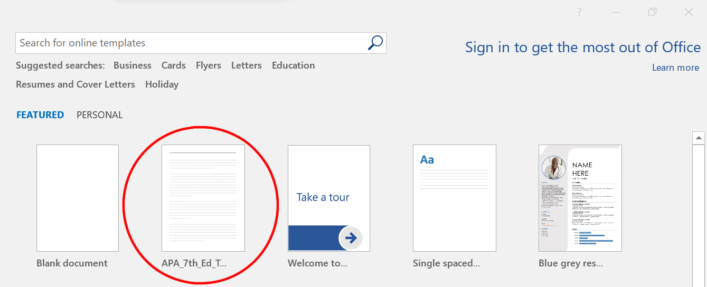
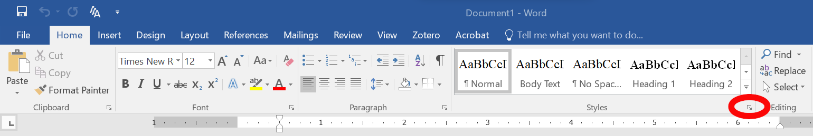
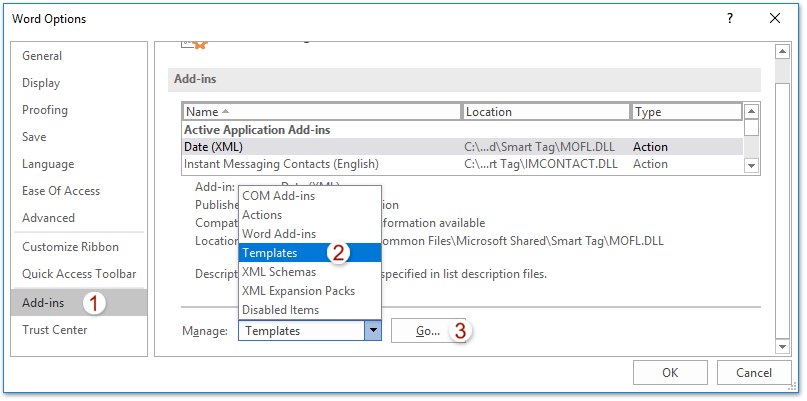
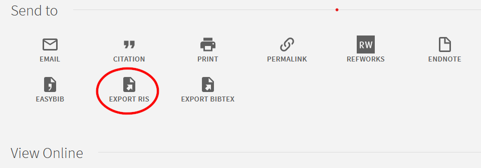

13 Using Templates and a Reference Manager
Work smarter, not harder –Scrooge McDuck et al.
13.1 Overview
This guide covers how to install and use both a style template and reference manager with Microsoft (MS) Word (after a brief description of their use with LibreOffice Writer).
13.2 Style Template
The idea behind style templates is that you separate out the plain-text content of a file from the way is is formatted, including the typeface/font, colors, how phrases are emphasized (e.g., with italics), etc. Separating out these two things greatly helps documents move from one platform or program to another. It also helps if, e.g., you submit a manuscript to one journal that uses APA format, but it gets rejected and you want to then submit it to another journal that uses, say, MLA. With templates, you simply choose a new template; without templates, you spend your afternoon plodding through your manuscript re-formatting headers, redoing every citation, etc. Using style templates thus help write because it lets you not worry about how to even put it into, say, APA format in the first place.
13.2.1 Loading Templates in MS Word
You can create your own template1, but it’s nearly always easier to use an existing one. There are several APA templates available online, including an “official” one from Microsoft2, ones from MS proponents, from coders, and from other schools. The one we’ll use is available here.
Loading a Template for the First Time
- Download the
APA_7th_Ed_Template.dotxWord template to your computer. - Open this file in MS Word.
- Choose to
Save Asthe file- Near the bottom of the dialogue box that opens, under
Save as type, select to save it as aWord Template. - Word should automatically save it in the
Documents > Custome Office Templatesfolder. This will allow you to more easily access this template in the future (as we’ll discuss just below)
- Near the bottom of the dialogue box that opens, under
Note that you can now use the template to write your paper. Now, though, when you save it, save is as a normal .docx file—not a .dotx template. (You can save it as a .dotx file and use that, but Word treats them differently and this will create a bunch of un-needed templates.)
Loading an Existing Template
Now that you’ve loaded the template into Word, you can more easily reuse it. Let’s start from the top to do this, so first close that template file and Word. Now, re-open Word.
From the Opening Dialogue
- Word, of course, opens to a dialogue that lets you choose recent files from the left-hand menu or to open a new file, using any of the mostly-useless templates that it gives in the main window on the right.
- You most likely only ever chose to open a
Blank document, but now you should see the APA template you saved listed among all of the other templates.

- If you don’t immediately see it, click on the word
Personalnext to the currently-highlightedFeaturedword. - You should see your APA template there—perhaps even as the only
Personaltemplate.
There is more to adding, opening, and modifying templates. TechRepublic has a good coverage of that, so we’ll jump now to using them.
13.2.2 Loading Templates in LO Writer
LibreOffice Writer—a free alternative to MS Word—works well with style templates.
Although there is an extension you can use to apply a style template, this is easily done by:
- Open a template like you would any other file in LO Writer. A template for the 7th edition of the APA Publication Manual is here.
- Click on
Insert > Document3. - Select the existing document you want to apply the style to.
Save Asa new version of the document that’s either anODF Text Document (.odt)orWord 2007--365 (.docs)file. I.e., that’s not a template (.ott) file.
You can most easily change the style template being used with the Template Changer extension:
- Download & load the extension
- Download the Template Changer extension
- In LO Writer, click on
Tools > Extension Manger...(Cntl + Alt + E) - In the dialogue that opens, choose to
Add, and then navigate to where you downloaeed the extension - Select and
Openthe downloaded extension (or, of course, just double-click on it) Acceptthe license agreement (if you indeed do)- Restart LO Writer
- Click
File > Templates > Change template (current document)...
13.2.3 Using a Template
MS Word
The template we’re using already has the outline for a typical article manuscript (and a few other things we’ll discuss later in this guide). You really simply need to start typing, and then Save as a normal .docx file to use it. There are a few things to point out and practice, though.
Again, you can use a template to do things like italicize words, but the main use will be for the section headings and sub-headings. To use the style template:
- Under the
Homeribbon, notice theStylessection - In the lower, right corner of the
Stylessection, click on the tiny box-with-arrow button to expand that section…

into a menu that defaults onto the right of the Word window:

You can now more easily use the styles.
I labelled the headings levels in the template4, but you can also tell what formatting is being applied to a given section by left-clicking on a piece of text; the formatting that’s being applied will be highlighted in that right-hand menu.
Clicking, e.g., on the document’s Title shows that it’s being formatted as a Level 1 heading. If you click on, say, Heading 2 in that menu, you will see that the section that’s currently chosen will change its formatting to be like the other Level 2 headings (like Participants is formatted under the Methods section).
Normal text also has its own style. Clicking on the normal text under Descriptive Statistics in the Results section shows that it’s formatted as Body Text. We could have used the Normal formatting just above Body Text in the menu; it really makes no difference—as long as both of those style elements are formatted the same (as they are here).
You can easily switch between style elements by clicking on different elements in the styles menu for a given piece of text. Note that headings and title elements in the menu will be applied to an entire paragraph5 while most other elements can be applied to single words (or other parts of a paragraph); there is a small pilcrow (¶) next to paragraphs styles in that menu and a small letter a next to non-paragraph styles.
(The Figure 1 title in the template is styled as Strong to show you how you could use styles to even make bold and italics text, even though you’ll likely just use Control/Command + B and Control/Command + I instead.)
Note that you can change the styling of the style elements (e.g., change how Level 1 headers look). To do this, simple right-click on an element in that styles menu and select Modify.... You can change the font elements, or—from the Format button at the bottom of the dialogue that opens—change the styling of the whole paragraph (or other things like the page border). When you open this Modify Style dialogue, note that you can apply this modification to just this file or to the template itself for use in other files:

Among the changes you may want to make to this template are taking out the sub-headings under Participants. I put them there simply to show all of the heading levels that APA allows, what they look like, and where they’re located in the styles menu.
When using a template to write a manuscript, remember to Save as a normal .docx file once you’ve started using. This will keep the styling but not screw up your template file.
If you want to make changes to the template, then Save as a .dotx file instead.
Applying a Template to an Existing Document in Word
It is relatively easy to apply a new template to an existing document—even if Word doesn’t make the steps to do so intuitive.
There are indeed times when you may want to apply a new template to an existing document. Many journals, for example, require you to format your submitted manuscript into their own style. So, if you submit a manuscript for publication to one journal, have it rejected, and then apply to an other journal, you will need to reformat the entire document for the second journal. This is a lot easier to do by simply applying a new style template to it.
Please note that this is more useful if the existing document you’re applying the new template already used styles to format the headings, etc. I covered how to do this above in Section 13.2.3.1.
The steps to doing so for MS Word are here. To summarize those steps (while only stealing a few of their nice graphics):
- Open your existing document in MS Word
- Click on
File > Options. - In the dialogue box that opens, click on
Add-insnear the bottom of the menu on the left. This is step1in the image below. - In the main part of that dialogue box, there is a
Managesection near the bottom. From that, chooseTemplates. - Click
Goright next to where you selectedTemplates.  - In the new dialogue box that opens, make sure to select
Automatically update documet styles.
- Click
Attachand thenOKin that same dialogue. - Navigate to the new style template (i.e., the
.dotxfile) you wish to use. Select it, and clickOpenat the bottom. - Click
OKwhen you return to the previous dialogue (shown inTemplates and Add-insdialogue). - You can now (re)save your document with the new style applied.
LO Writer
- Open a style template file in Writer. Templates’ extension is
.ott; an example of one is this APA 7th Edition template. - Save the file as an
ODF Text Document (.odt)file; this is the default extension for all open document text files, like those created by LO Writer. - There are three ways to change styles of parts of the document:
- Click on the
Stylesdrop-down menu - Click on the
Stylesdrop-down menu that may appear in the the toolbar.- This option may not be added by default, depending on the version of Writer, but can be easily added via
Tools > Customize... > Toolbarswhere it can be added to one of the toolbars.
- This option may not be added by default, depending on the version of Writer, but can be easily added via
- Tapping
F11to open aside menu with all of the various types of format-able fields. - Using the keyboard directly where, e.g.:
Cntl + 1(Commandon a Mac) formats the paragraph as a level 1 headerCntl/Command + 2formats as a level 2 header, etc.Cntl/Command + 0formats as text body
- Click on the
I find using Cntl/Command + works best since I can simply type my manuscript and just hit, e.g., Cntl/Command + 1 and keep typing, say, “Methods,” hit Enter to start a new paragraph, hit Cntl/Command + 2 and type “Participants,” hit enter again, and then start writing that section. That’s it, with just a few key combinations to remember you can not worry about formatting.
And you may have noticed in what I wrote, most styles are applied to paragraphs, not—say—individual words or phrases inside a paragraph. You can use styles to do this (and sometimes I do), but just Cntl/Command + I to italics, Cntl/Command + B for bold, etc. work just as well; using those common key combinations will apply whatever style has been set for italics, bold-face, etc.
13.3 Reference Manager
Styling documents is one thing that computers ought to do well and relieve us from having to do ourselves. Managing our citations is certainly another. A reference manager allows you to collect and organize your citations. More importantly here, it lets you add them to your manuscript easily and to create your References section automatically. The only issue is if you collaborate with others on the same manuscript, you’ve got to use the same citation file format (.bib vs. .ris etc.)
I will cover two reference managers, RefWorks (Section 13.3.1) and Zotero (Section 13.3.2). RefWorks is useful for MS Word on Windows & Apple OSs; Zotero is good for GNU/Linus OSs. Please note that other popular reference managers include Mendeley, Endnote, and RefWorks. I used to use JabRef and still kinda miss it.
13.3.1 RefWorks
RefWorks is a web-based reference management tool that helps researchers organize citations, generate bibliographies, and integrate seamlessly with word processors. This tutorial provides step-by-step instructions for:
- Downloading and setting up RefWorks (Section 13.3.1.1).
- Installing and using RefWorks Citation Manager (RCM) in Microsoft Word (Section 13.3.1.2).
- Using RefWorks with Google Docs (Section 13.3.1.3)
- Using RefWorks with LibreOffice Writer (Section 13.3.1.4).
Downloading and Setting Up RefWorks
RefWorks is a web-based citation management tool, meaning it does not require installation on your computer. However, it does have browser plugins, word processor add-ons, and import/export tools that need setup.
Step 1: Creating a RefWorks Account
- Go to the RefWorks website.
- Click on
Create Accountand go through the steps listed.- RefWorks asks for your institutional email; using this should let you use RefWorks for free. Hopefully you still can after you graduate.
- Follow the registration prompts to set up your account.
Step 2: Installing Browser Extensions (Optional)
RefWorks offers browser extensions for importing citations from websites.
- Chromium / Google Chrome:
- Install the
Save to RefWorksextension from the Chrome Web Store. - Click on the extension icon and log into your RefWorks account.
- Install the
- Firefox:
- Install the
Save to RefWorksadd-on from the Firefox Add-ons Store. - Click on the extension and sign in.
- Install the
Using RefWorks with Microsoft Word
RefWorks integrates with Microsoft Word via RefWorks Citation Manager (RCM), available as an add-in.
Installing RefWorks Citation Manager (RCM) in Microsoft Word
Windows and macOS:
- Open
Microsoft Word. - Go to
Insert > Get Add-ins. - Search for RefWorks Citation Manager.
- Click
Addto install. - Open the
RefWorks Citation Managerfrom theReferencestab. - Log into your RefWorks account.
Using RefWorks in Microsoft Word
- Open RefWorks Citation Manager in Word.
- Select a citation from your RefWorks library.
- Click
Insert Citationto add it to your document. - To create a bibliography:
- Click
Bibliography Options > Create Bibliography. - Select a citation style (e.g., APA, MLA, Chicago).
- Click
Using RefWorks with Google Docs
Installing and Using RefWorks in Google Docs
- Open Google Docs.
- Click on
Extensions > Add-ons > Get add-ons. - Search for RefWorks and install the RefWorks Citation Manager add-on.
- Open the add-on by navigating to
Extensions > RefWorks Citation Manager > Start. - Log into your RefWorks account.
Using RefWorks in Google Docs
- Open RefWorks Citation Manager in Google Docs.
- Select a citation from your RefWorks library.
- Click
Insert Citationto add it to your document. - To create a bibliography:
- Click
Bibliography Options > Create Bibliography. - Select a citation style (e.g., APA, MLA, Chicago).
- Click
Using RefWorks with LibreOffice Writer
RefWorks does not have a direct plugin for LibreOffice Writer, but you can still use it effectively.
Method 1: Manually Exporting Citations
- In RefWorks, select the citations you want.
- Click
Export > Bibliographic Software. - Choose
RIS Formatand download the file. - Open LibreOffice Writer, insert references manually.
Method 2: Using the Write-N-Cite Tool
Write-N-Cite is available for Windows and macOS, but not for GNU/Linux. It allows inserting citations directly in LibreOffice.
- Download Write-N-Cite from RefWorks (link).
- Install the tool and log in.
- In LibreOffice, open Write-N-Cite and insert citations.
Method 3: Using the Quick Cite Feature
- In RefWorks, go to
Cite > Quick Cite. - Select citations and copy-paste them into LibreOffice Writer.
Troubleshooting and Additional Tips
Common Issues and Solutions
| Issue | Solution |
|---|---|
| RefWorks add-in not appearing in Word | Restart Word and reinstall from the Add-ins store. |
| Save to RefWorks not working in browser | Clear cache and reinstall the extension. |
| Bibliography formatting issues | Ensure correct citation style is selected in RCM. |
| Linux users can’t use RCM | Use Quick Cite or export citations manually. |
For more information, visit the RefWorks Help Center.
13.3.2 Zotero
Zotero has a rather user-friendly set of guides in their Documentation section. I’ll cover only the most common features now.
- Go to the Zotero Download page where there should be shown options to install it into your given operating system.
- Note that you can also install it into your browser from there. More about this later.
- When you run the file you just downloaded, it will install Zotero on your computer.
- It should also automatically integrate itself into Word. If you need to, though, you can manually install that Word functionality.
Adding Citations to Zotero
- I’ve added a few sources into a file in BlackBoard as
Sources to Add to Zotero, but you can also download that same file here. Do please save that file to your computer. - In Zotero, click on
File > Import...(orControl/Command + Shift + I) - In the dialogue box that opens, leave selected
A file (BibTeX, RIS, Zotero RDF, etc.)and clickNext - Navigate to the file you downloaded (it’s named
zotero_sources.bib) andOpenit - In the
Optionsdialogue, I suggest unselectingPlace imported collections and items into a new collection6 before clickingNextthenFinish
Ta-da! You have your first set of citations.
You can also get citations from, e.g., the Hunter library:
- Go to the main page and enter something into the OneSearch field.
- Click on a source you like to open the page about it.
- Under the
Send tosection, click on theExport RIS - For
Encoding, chooseUTF-8and then clickDownloadand thenSaveit - You can now navigate to this file and import it just like you did that one I created for you.
Note that a good number of publishers will allow you to download articles and citations directly to your library. So, sometimes it’s worth clicking to View Online in the Hunter library page for a source, go to the article’s site under the publisher, and download it directly to Zotero from there.
If you’ve added the browser extension, you can also use that both to access citations (through your Zotero account if you’ve set on up) or to download sources through that. This works rather well (in FireFox at least; I rarely use Chrome/Chromium or Safari).
Syncing Library
If you want, you can to Register for an account at Zotero. Doing this allows you to upload your library to their server and to use that to sync your library of sources across machines. There are options to pay for more storage, but I doubt you’ll need to do that; I accidentally have over 13,000 sources in my library7 and still haven’t run out of room.
Once (if) you’ve set up an account, you can click on the Web Library link to access your citations online. You can also synchronize them with your local instance:
- In Zotero on your computer, click on
Edit > Preferences - Click on the
Synctab - Click to
Linkyour account- I suggest selecting to
Sync automaticallyand perhaps to select all other options to syn full text, attachments, notes, etc.
- I suggest selecting to
- Zotero will ask you to log in; with larger libraries, it can take several minutes to sync the first time, but subsequent syncs are as quick as any such operations with, e.g., Dropbox.
Using Zotero to Cite Sources in Word
Setting up Preferences
- Make sure Zotero is open
- In Word, open/create the file you’d like to import citations into
- There should be a Zotero tab near the right end of your list of ribbons; if not, can manually install it.
- Go to the place in the text where you want to insert the citation; leave the cursor there
- Click on the Zotero tab to access that ribbon
- Click on
Document Preferencesin that ribbon - In the dialogue that opens, choose the citation style you want to use from the
Citation Stylelist- Unless you work with those like me who use LibreOffice, leave it to
Store Citations asFieldsand make sureAutomatically update ciationsis also selected.
- Unless you work with those like me who use LibreOffice, leave it to
To Add a Citation in Text
- Make sure Zotero is open
- In Word, open/create the file you’d like to import citations into
- There should be a Zotero tab near the right end of your list of ribbons; if not, can manually install it.
- Go to the place in the text where you want to insert the citation; leave the cursor there
- Click on the Zotero tab to access that ribbon
- Click on the
Add/Edit Citationbutton - A very slim dialogue opens where you can search for the citation(s) to add:

- Note that you can search by author, title, journal, keyword, etc.
- Select the citation you want from the drop-down list
- If you want to add more citations, simple search for and choose them as well from that same dialogue
- You now have a few options for how to include that citation:
- If you leave it as it is and simply hit
Enter, it will add a parenthetical citation, e.g., “(Cohen, 1988)” - If you instead left-click on the citation, an other dialogue will open:
- Selecting to
Omit Authorwill add just the data in parentheses, e.g., “(1988)”; you would simply type in, e.g., “Cohen” before that to note the authors - Selecting
Pagewill allow you to add page numbers, e.g., “(Cohen, 1988, p. 200 – 201)” Prefixallows you to add text before the citation in the parentheses, e.g., “(see Cohen, 1988)”- Suffix allows you to add text after it, e.g., “(Cohen, 1988, and others)”
- Selecting to
- If you leave it as it is and simply hit
To Create a Reference Section
Simply click on the Refresh button in the Zotero ribbon. This will create and update your reference section with any citations you’ve added or removed. In fact, having selected Automatically update ciations under Document Preferences should suffice.
Creating Figure and Table Fields
One more thing to automate: the numbering of figures and tables. This is a bit kludgy in Word, but still worth it.
Adding and Captioning a Figure or Table
- Add your figure or table
- Figures are usually inserted as simple image files (
Insert > Pictures) - Tables are best done via:L
Insert > Table- Use your mouse to drag your cursor to select the number of rows and columns you want (or choose
Insert Tablethere to type in the number of columns & rows along with formatting of them)
- Figures are usually inserted as simple image files (
- Tables should automatically gain a caption, but figures won’t. To add a caption for a figure:
- Right-click on the image
- Click on
Insert Caption - Under
Options, chooseFigure - Under
Caption, maybe type in a title for your figure. Note that this will put it on the same line as “Figure 1” which is not strictly APA; APA dictates adding the title on the line below “Figure 1,” as I did in the template - Under
Position, chooseAbove selected itemsince that’s what APA wants - Select to
Exclude label from caption - Click
OK
Inserting Updatable References to Figures & Tables
- Now, go to an other place in the manuscript where you want to reference that figure or table.
- Under the
Referencestab, click on theCross-referencebutton:
- Under
Reference type, chooseFigureorTableas applies - Set
Insert reference toEntire caption(unless you didn’t select toExclude label from captionfrom theCaptiondialogue or, of course, if you want to include it) - Doing all of this should produce a list of the figures or tables in the
For which captionfield; simply choose the one you want.
- Under the
- Word will update the numbering of figures and tables . . . if you ask it to; it won’t do it automatically. To update them:
- As per these instructions, you can choose to update them by selecting text with similar formatting
- Or simply select all text (
Control/Command + A) - Right-click on the reference to a figure/table in the text and choose
Update fieldfrom the drop-down menu that appears - If a dialogue opes asking what to update (“
Update Table or Figures?”), then chooseUpdate entire table - And click
OK
That should do it. Again, it is a bit kludgy in Word. I included an example of such a cross reference in that template—yet another thing you may wish to delete before making that template your own.
13.4 Additional Resources
- Working with tables
- Putting tables in APA format
- More manipulations of descritpive tables including removing columns and rows and pivoting tables

And the one we’ll use is one that I created.↩︎
Although MS offers none for the current edition of the APA Manual, and they have not put much effort into making such templates complete or ensuring their accuracy. After all, it’s hard to support both another billionaire CEO and quality products!↩︎
In the Ubuntu version of Writer, the menu selections are
Insert > Text from File....↩︎Once you’re more familiar with doing this, you may want to delete those extra cues—and the extra text—and re-save this as a cleaner
.dotxtemplate file.↩︎This actually presents a problem for APA style. APA dictates that level 4 and 5 headings show not be on their own line, but simply at the beginning of a paragraph, with the rest of the paragraph formatted like normal text. I don’t know how to get around that without some kludgy elements that, say, have negative margins on the bottom.↩︎
You can create several libraries, e.g., one for each line of research you pursue. However, I find that gets complicated and doesn’t really help. So, I put all of my citations into one library.↩︎
Mistaken duplications↩︎